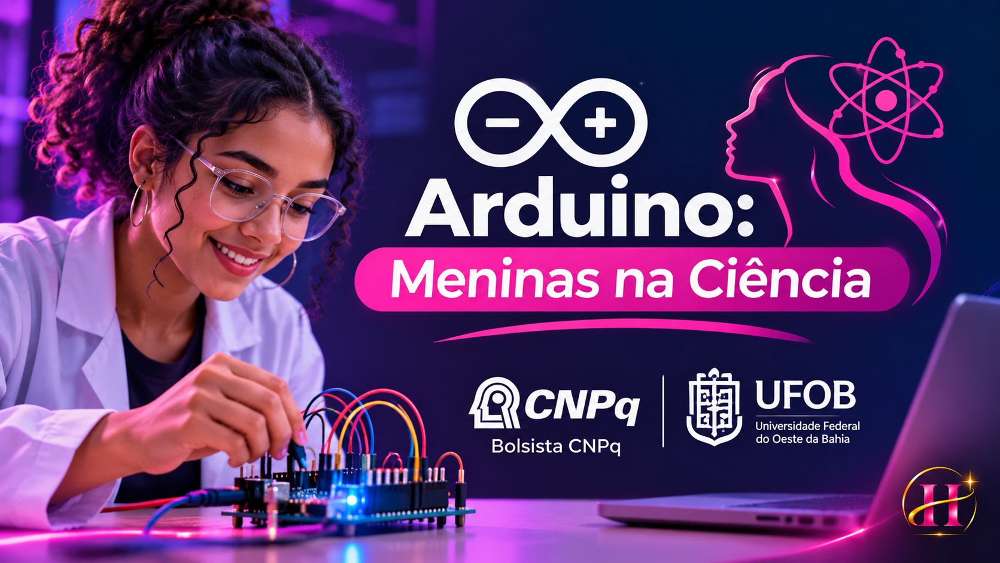

Reduzir barreiras de entrada
Apresentar conceitos técnicos de maneira acessível, estimulando a curiosidade e o interesse por ciência e tecnologia.
Uma experiência que conecta educação, programação, robótica e incentivo à participação feminina na tecnologia.
Minha atuação como monitora bolsista CNPq aproximou estudantes da rede pública de Barreiras (BA) da eletrônica e da programação de microcontroladores.

A proposta do projeto foi tornar a tecnologia mais próxima e acessível, oferecendo atividades práticas de robótica, eletrônica e lógica de programação para estudantes da rede pública estadual.
Apresentar conceitos técnicos de maneira acessível, estimulando a curiosidade e o interesse por ciência e tecnologia.
Utilizar circuitos, componentes eletrônicos e programação para transformar ideias abstratas em experiências concretas.
Acompanhar estudantes na montagem, nos testes e na solução de problemas, valorizando o aprendizado colaborativo.
Uma representação das habilidades trabalhadas na experiência educativa, desde o contato com os componentes até a solução de desafios.
Conhecer a placa Arduino, os componentes eletrônicos e suas funções.
Conectar protoboard, jumpers e componentes em circuitos didáticos.
Aplicar lógica, condicionais e repetições com C/C++ no Arduino.
Identificar erros, experimentar soluções e compreender o resultado.
Controle um LED virtual e observe como as instruções C/C++ mudam seu comportamento.
Escolha um comportamento e veja como um programa Arduino pode controlar um LED.
Sensores permitem que sistemas eletrônicos reajam a condições do mundo físico. Experimente abaixo uma lógica simplificada de detecção de proximidade.
Arraste o controle para aproximar ou afastar um objeto virtual.
Regra demonstrativa: distâncias de até 20 cm acionam um alerta virtual.
O repositório do projeto reúne exemplos de programação com diferentes componentes eletrônicos. Explore os arquivos e os conceitos associados a cada tecnologia.
Controle de sinais digitais, estados HIGH e LOW e sequências de acionamento.
Explorar código ↗Princípios de leitura de distância e aplicação de condições para responder a medições.
Explorar código ↗Introdução ao controle de movimentos e posições de dispositivos eletromecânicos.
Explorar código ↗Exibição de mensagens e informações produzidas por sistemas embarcados.
Explorar código ↗Introdução à comunicação sem fio entre dispositivos e microcontroladores.
Explorar código ↗Experimentos com controle de movimento e aplicações de bibliotecas para motores.
Explorar código ↗Explicação de eletrônica e programação com linguagem acessível para estudantes em fase de iniciação.
Orientação em atividades práticas com Arduino, protoboard, componentes e protótipos.
Apoio na identificação de falhas em códigos, conexões e testes, incentivando a investigação.
Acompanhamento das estudantes e incentivo à autonomia na construção de soluções.
A experiência com o Arduino: Meninas na Ciência integra minha trajetória de formação tecnológica e reforça o valor da educação prática e da democratização do conhecimento.
Conhecer o repositório completo ↗